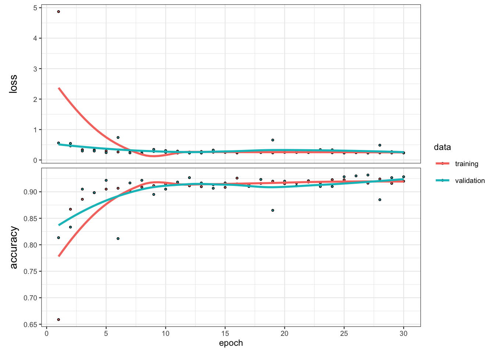

9 Réseaux de neurones avec Keras
Nous présentons ici une introduction au réseau de neurones à l’aide du package keras. On pourra trouver une documentation complète ainsi qu’un très bon tutoriel aux adresses suivantes https://keras.rstudio.com et https://tensorflow.rstudio.com/tutorials/beginners/basic-ml/. On commence par charger la librairie
library(keras)
#install_keras() 1 seule fois sur la machineOn va utiliser des réseaux de neurones pour le jeu de données spam où le problème est d’expliquer la variable binaire typepar les 57 autres variables du jeu de données :
library(kernlab)
data(spam)
spamX <- as.matrix(spam[,-58])
#spamY <- to_categorical(as.numeric(spam$type)-1, 2)
spamY <- as.numeric(spam$type)-1On sépare les données en un échantillon d’apprentissage et un échantillon test
set.seed(5678)
perm <- sample(4601,3000)
appX <- spamX[perm,]
appY <- spamY[perm]
validX <- spamX[-perm,]
validY <- spamY[-perm]A l’aide des données d’apprentissage, entraîner un perceptron simple avec une fonction d’activation sigmoïde. On utilisera 30 epochs et des batchs de taille 5.
On définit tout d’abord la structure du réseau, 1 seule couche ici de 1 neurone :
percep.sig <- keras_model_sequential() percep.sig %>% layer_dense(units=1,input_shape = 57,activation="sigmoid")summary(percep.sig) ## Model: "sequential" ## ____________________________________________________________ ## Layer (type) Output Shape Param # ## ============================================================ ## dense (Dense) (None, 1) 58 ## ============================================================ ## Total params: 58 ## Trainable params: 58 ## Non-trainable params: 0 ## ____________________________________________________________On donne ensuite la fonction de perte, l’algorithme d’optimisation ainsi que le critère pour mesurer la performance du réseau :
percep.sig %>% compile( loss="binary_crossentropy", optimizer="adam", metrics="accuracy" )On donne enfin dans fit les paramètres qui permettent d’entrainer le modèle (taille des batchs, nombre d’epochs…)
p.sig <- percep.sig %>% fit( x=appX, y=appY, epochs=30, batch_size=5, validation_split=0.2, verbose=0 )La fonction plot permet de visualiser la perte et la performance en fonction du nombre d’epochs :
plot(p.sig)
Faire de même avec la fonction d’activation softmax. On utilisera pour cela 2 neurones avec une sortie \(Y\) possédant la forme suivante.
spamY1 <- to_categorical(as.numeric(spam$type)-1, 2) appY1 <- spamY1[perm,] validY1 <- spamY1[-perm,]percep.soft <- keras_model_sequential() percep.soft %>% layer_dense(units=2,input_shape = 57,activation="softmax")summary(percep.soft) ## Model: "sequential_1" ## ____________________________________________________________ ## Layer (type) Output Shape Param # ## ============================================================ ## dense_1 (Dense) (None, 2) 116 ## ============================================================ ## Total params: 116 ## Trainable params: 116 ## Non-trainable params: 0 ## ____________________________________________________________percep.soft %>% compile( loss="binary_crossentropy", optimizer="adam", metrics="accuracy" )p.soft <- percep.soft %>% fit( x=appX, y=appY1, epochs=30, batch_size=1, validation_split=0.2, verbose=0 )plot(p.soft)
Comparer les performances des deux perceptrons sur les données de validation à l’aide de la fonction evaluate.
percep.sig %>% evaluate(validX,validY,verbose=0) ## loss accuracy ## 9.779753 0.550281 percep.soft %>% evaluate(validX,validY1,verbose=0) ## loss accuracy ## 22.4556885 0.5940037Construire un ou deux réseaux avec deux couches cachées. On pourra faire varier les nombre de neurones dans ces couches. Comparer les performances des réseaux construits.
On propose tout d’abord 2 couches cachées composées de 100 neurones :
mod2c <- keras_model_sequential() mod2c %>% layer_dense(units=100,activation="softmax") %>% layer_dense(units=100,activation="softmax") %>% layer_dense(units = 1,activation = "sigmoid")mod2c %>% compile( loss="binary_crossentropy", optimizer="adam", metrics="accuracy" )mod2c %>% fit( x=appX, y=appY, epochs=100, batch_size=3, validation_split=0.2, verbose=0 )mod2c %>% evaluate(validX,validY,verbose=0) ## loss accuracy ## 0.6934540 0.3991255On propose ici 50 neurones pour la première couche cachée et 30 neurones pour la seconde. On ajoute de plus un dropout dans la première couche cachée (permet généralement d’éviter le sur-apprentissage, mais pas forcément utile ici).
mod2cd <- keras_model_sequential() mod2cd %>% layer_dropout(0.7) %>% layer_dense(units=50,activation="softmax") %>% layer_dense(units=30,activation="softmax") %>% layer_dense(units = 1,activation = "sigmoid")mod2cd %>% compile( loss="binary_crossentropy", optimizer="adam", metrics="accuracy" )mod2cd %>% fit( x=appX, y=appY, epochs=150, batch_size=5, validation_split=0.2, verbose=0 )On évalue la performance sur les données test :
mod2cd %>% evaluate(validX,validY,verbose=0) ## loss accuracy ## 0.6921442 0.6427233